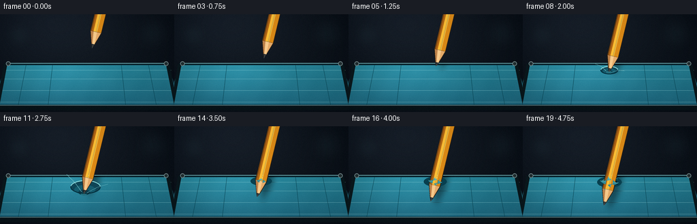
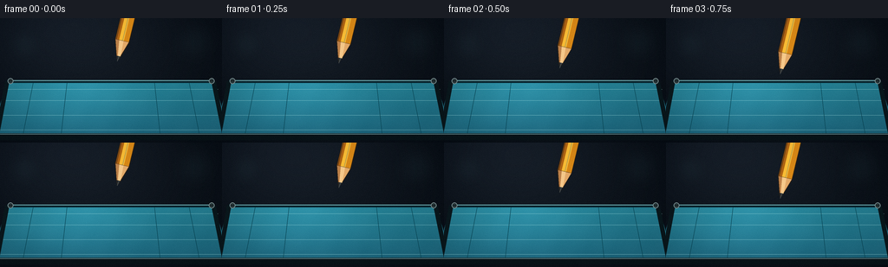

CODING AGENTS AS PIXEL WORLD MODELS
traex/GPT-5.6-Sol · mechanics_0031
点击播放 · 原生 RGB 像素
逐轮保存的候选
回放视频、检查图与代码变化。
每份候选均可单独播放。实际图片检查记录在下方工具轨迹中。
候选 01播放与检查图
点击播放 · 原生 RGB 像素


展开代码变化
--- 上一保存版本
+++ 本次保存版本
@@ -0,0 +1,275 @@
+from pathlib import Path
+import math
+import numpy as np
+from PIL import Image, ImageDraw, ImageFilter
+import artifact_io
+
+# Procedural, high-resolution illustration of a pencil puncturing a taut latex sheet.
+# Everything is drawn at 4x and reduced with Lanczos for clean cinematic edges.
+W, H, N, S = 256, 144, 20, 4
+rng = np.random.default_rng(31031)
+
+def sc(v):
+ return int(round(v * S))
+
+def pts(seq):
+ return [(sc(x), sc(y)) for x, y in seq]
+
+def smooth(x):
+ x = max(0.0, min(1.0, x))
+ return x*x*(3.0-2.0*x)
+
+def lerp(a,b,t): return a+(b-a)*t
+
+def ellipse(draw, box, fill, outline=None, width=1):
+ draw.ellipse(tuple(sc(q) for q in box), fill=fill, outline=outline, width=sc(width))
+
+def line(draw, xy, fill, width=1, joint='curve'):
+ draw.line(pts(xy), fill=fill, width=max(1,sc(width)), joint=joint)
+
+def polygon(draw, xy, fill):
+ draw.polygon(pts(xy), fill=fill)
+
+def bezier(p0,p1,p2,p3,n=30):
+ out=[]
+ for t in np.linspace(0,1,n):
+ u=1-t
+ out.append((u**3*p0[0]+3*u*u*t*p1[0]+3*u*t*t*p2[0]+t**3*p3[0],
+ u**3*p0[1]+3*u*u*t*p1[1]+3*u*t*t*p2[1]+t**3*p3[1]))
+ return out
+
+def closed_lens(a,b,w0,w1,bend=0):
+ # A tapered curved ribbon around segment a->b.
+ dx=b[0]-a[0]; dy=b[1]-a[1]; L=max(1,math.hypot(dx,dy)); nx=-dy/L; ny=dx/L
+ c1=(lerp(a[0],b[0],.34)+nx*bend,lerp(a[1],b[1],.34)+ny*bend)
+ c2=(lerp(a[0],b[0],.72)+nx*bend,lerp(a[1],b[1],.72)+ny*bend)
+ top=bezier((a[0]+nx*w0,a[1]+ny*w0),(c1[0]+nx*w0*.7,c1[1]+ny*w0*.7),
+ (c2[0]+nx*w1*.7,c2[1]+ny*w1*.7),(b[0]+nx*w1,b[1]+ny*w1),18)
+ bot=bezier((b[0]-nx*w1,b[1]-ny*w1),(c2[0]-nx*w1*.7,c2[1]-ny*w1*.7),
+ (c1[0]-nx*w0*.7,c1[1]-ny*w0*.7),(a[0]-nx*w0,a[1]-ny*w0),18)
+ return top+bot
+
+# static high-res background: dark studio with cyan reflected light
+hh, ww = H*S, W*S
+yy, xx = np.mgrid[0:hh,0:ww] / S
+vign = ((xx-W*.5)/(W*.76))**2 + ((yy-H*.45)/(H*.95))**2
+warm = np.exp(-((xx-76)**2/(2*82**2)+(yy-5)**2/(2*58**2)))
+base=np.zeros((hh,ww,3),dtype=np.float32)
+base[:,:,0]=12+12*warm-8*vign
+base[:,:,1]=18+14*warm-8*vign
+base[:,:,2]=25+17*warm-7*vign
+base=np.clip(base,0,255).astype(np.uint8)
+BG=Image.fromarray(base,'RGB').convert('RGBA')
+# soft, out-of-focus workshop highlights
+bokeh=Image.new('RGBA',(ww,hh),(0,0,0,0)); bd=ImageDraw.Draw(bokeh)
+for x,y,r,a in [(28,31,16,18),(225,28,22,13),(190,54,8,10),(66,59,5,14)]:
+ ellipse(bd,(x-r,y-r,x+r,y+r),(101,160,170,a))
+bokeh=bokeh.filter(ImageFilter.GaussianBlur(sc(9)))
+BG=Image.alpha_composite(BG,bokeh)
+
+# static sheet image and mask
+sheet_mask=Image.new('L',(ww,hh),0); md=ImageDraw.Draw(sheet_mask)
+sheet_poly=[(8,73),(246,73),(267,137),(-11,137)]
+polygon(md,sheet_poly,255)
+Y=np.arange(hh)[:,None]/S; X=np.arange(ww)[None,:]/S
+z=np.clip((Y-69)/72,0,1)
+spec=np.exp(-((X-88)/72)**2)*np.exp(-((Y-85)/50)**2)
+edge=np.exp(-((X-128)/155)**4)
+tex=(np.sin(X*.19+Y*.09)+np.sin(X*.053-Y*.13))*0.75
+sheet_arr=np.zeros((hh,ww,4),dtype=np.uint8)
+sheet_arr[:,:,0]=np.clip(37-10*z+11*spec+tex,0,255)
+sheet_arr[:,:,1]=np.clip(128-31*z+22*spec+tex,0,255)
+sheet_arr[:,:,2]=np.clip(147-27*z+25*spec+tex,0,255)
+sheet_arr[:,:,3]=np.array(sheet_mask)
+SHEET=Image.fromarray(sheet_arr,'RGBA')
+
+CP=np.array([128.0,79.0])
+D=np.array([-0.235,0.972]) # pencil direction, from upper shaft toward point
+PERP=np.array([D[1],-D[0]])
+
+def pencil_tip(frame):
+ if frame <= 6:
+ dist=30*(1-smooth(frame/6))
+ return CP-D*dist
+ if frame <= 12:
+ dep=1+22*smooth((frame-6)/6)
+ else:
+ dep=23+16*smooth((frame-12)/7)
+ # a barely perceptible hand tremor once the rubber gives way
+ wob=.28*math.sin(frame*1.7) if frame>=13 else 0
+ return CP+D*dep+PERP*wob
+
+def draw_pencil(layer, tip, shadow=False):
+ dr=ImageDraw.Draw(layer,'RGBA')
+ p=np.array(tip,float); bgraph=p-D*6.2; bwood=p-D*24.5; top=p-D*154
+ n=PERP
+ if shadow:
+ off=np.array([7.5,5.5])
+ polygon(dr,[tuple(top+n*8+off),tuple(top-n*8+off),tuple(bwood-n*8+off),tuple(p+off),tuple(bwood+n*8+off)],(0,6,9,116))
+ return
+ # dark crisp silhouette around the hexagonal pencil
+ polygon(dr,[tuple(top+n*8.6),tuple(top-n*8.6),tuple(bwood-n*8.6),tuple(bgraph-n*2.7),tuple(p),tuple(bgraph+n*2.7),tuple(bwood+n*8.6)],(40,30,20,255))
+ # shaft facets
+ polygon(dr,[tuple(top+n*7.7),tuple(top+n*1.7),tuple(bwood+n*1.7),tuple(bwood+n*7.7)],(218,137,23,255))
+ polygon(dr,[tuple(top+n*1.7),tuple(top-n*3.8),tuple(bwood-n*3.8),tuple(bwood+n*1.7)],(252,190,53,255))
+ polygon(dr,[tuple(top-n*3.8),tuple(top-n*7.7),tuple(bwood-n*7.7),tuple(bwood-n*3.8)],(178,101,19,255))
+ # long lacquer highlight and edge seam
+ line(dr,[tuple(top+n*.4),tuple(bwood+n*.4)],(255,224,107,165),.75)
+ line(dr,[tuple(top-n*7.0),tuple(bwood-n*7.0)],(112,61,19,190),.65)
+ # sharpened cedar cone, divided into facets
+ polygon(dr,[tuple(bwood+n*7.7),tuple(bwood+n*1.4),tuple(bgraph+n*2.25),tuple(p)],(229,171,106,255))
+ polygon(dr,[tuple(bwood+n*1.4),tuple(bwood-n*3.6),tuple(bgraph-n*1.05),tuple(p),tuple(bgraph+n*2.25)],(247,202,139,255))
+ polygon(dr,[tuple(bwood-n*3.6),tuple(bwood-n*7.7),tuple(p),tuple(bgraph-n*1.05)],(190,130,74,255))
+ # exposed graphite
+ polygon(dr,[tuple(bgraph+n*2.25),tuple(p),tuple(bgraph-n*2.0)],(39,43,45,255))
+ line(dr,[tuple(bgraph+n*.5),tuple(p)],(112,119,119,210),.55)
+ # boundary of shaved wood
+ line(dr,[tuple(bwood+n*7.5),tuple(bwood-n*7.5)],(111,72,35,160),.6)
+
+def draw_sheet_details(im):
+ d=ImageDraw.Draw(im,'RGBA')
+ # Far clamped edge establishes that the membrane is stretched tightly.
+ line(d,[(8,73),(246,73)],(8,36,45,235),3.4)
+ line(d,[(10,72),(244,72)],(116,176,181,180),1.1)
+ # perspective tension lines / subtle molded rubber grain
+ for y,a in [(82,24),(95,18),(112,13),(129,10)]:
+ line(d,[(6-(y-73)*.14,y),(250+(y-73)*.14,y+.3)],(163,224,225,a),.55)
+ for x in [38,77,178,218]:
+ line(d,[(x,75),(128+(x-128)*1.13,135)],(6,64,79,12),.45)
+ # Side and near metal hoop
+ line(d,[(8,73),(-4,137)],(10,24,29,255),5)
+ line(d,[(246,73),(259,137)],(9,23,28,255),5)
+ line(d,[(-4,137),(260,137)],(8,19,24,255),8)
+ line(d,[(0,134),(256,134)],(91,124,128,230),1.1)
+ # clamp bolts
+ for x in (12,244):
+ ellipse(d,(x-3.3,69.3,x+3.3,75.9),(42,58,61,255),(137,158,160,230),.7)
+ line(d,[(x-1.7,72.6),(x+1.7,72.6)],(15,22,24,220),.7)
+
+def draw_indent(im, tip, frame):
+ d=ImageDraw.Draw(im,'RGBA')
+ dep=max(0,float(np.dot(np.array(tip)-CP,D)))
+ t=smooth((frame-6)/6) if frame>=6 else 0
+ center=CP+(np.array(tip)-CP)*.50
+ rx=9+dep*.62; ry=4.2+dep*.27
+ # broad compressed shadow on the down-slope
+ ellipse(d,(center[0]-rx,center[1]-ry,center[0]+rx,center[1]+ry),(15,70,87,int(95+80*t)))
+ # nested displacement bands suggest a deep elastic funnel
+ c2=CP+(np.array(tip)-CP)*.69
+ ellipse(d,(c2[0]-rx*.70,c2[1]-ry*.68,c2[0]+rx*.70,c2[1]+ry*.68),(21,92,110,int(145+65*t)))
+ c3=CP+(np.array(tip)-CP)*.88
+ ellipse(d,(c3[0]-rx*.39,c3[1]-ry*.40,c3[0]+rx*.39,c3[1]+ry*.40),(13,62,78,int(170+55*t)))
+ # rubber stretched tight over the very tip (still unbroken)
+ ellipse(d,(tip[0]-4.2,tip[1]-2.25,tip[0]+4.2,tip[1]+2.25),(35,112,128,245))
+ # lit upper rim / dark lower rim
+ arcbox=tuple(sc(q) for q in (center[0]-rx,center[1]-ry,center[0]+rx,center[1]+ry))
+ d.arc(arcbox,190,352,fill=(142,221,222,185),width=sc(1.15))
+ d.arc(arcbox,8,180,fill=(2,44,57,170),width=sc(1.25))
+ # curved strain lines leading into the indentation
+ for side in (-1,1):
+ a=CP+PERP*(rx+9)*side + np.array([0,-1])
+ b=c3+PERP*4.0*side
+ mid=(a+b)/2 + np.array([0, -2.3])
+ curve=bezier(tuple(a),tuple(mid),tuple(mid),tuple(b),18)
+ line(d,curve,(128,205,207,72),.6)
+
+def tear_shape(center,u):
+ # Irregular star-like aperture; elliptical due to camera perspective.
+ arr=[]
+ count=18
+ for k in range(count):
+ a=2*math.pi*k/count
+ jag=1 + .18*math.sin(k*4.37+1.2)+.10*math.sin(k*8.1)
+ rx=(2.1+8.0*u)*jag
+ ry=(1.15+4.6*u)*(1+.14*math.sin(k*5.3))
+ arr.append((center[0]+math.cos(a)*rx,center[1]+math.sin(a)*ry))
+ return arr
+
+def draw_tear_under(im, frame):
+ u=smooth((frame-12)/7)
+ d=ImageDraw.Draw(im,'RGBA')
+ c=CP+D*(1.4+2.0*u)
+ # released shallow puckering around the aperture
+ ellipse(d,(c[0]-15-3*u,c[1]-6-2*u,c[0]+15+3*u,c[1]+6+2*u),(8,64,79,72))
+ # radial split lines grow as the material tears
+ angles=[-2.82,-2.18,-1.28,-.44,.30,1.02,1.80,2.54]
+ lengths=[10,7,12,8,14,9,12,8]
+ for j,(a,L) in enumerate(zip(angles,lengths)):
+ L=L*(.25+.75*u)
+ start=(c[0]+math.cos(a)*(2+4*u),c[1]+math.sin(a)*(1+2*u))
+ end=(c[0]+math.cos(a)*L,c[1]+math.sin(a)*L*.55)
+ bend=2.0*math.sin(j*2.1)
+ mid=((start[0]+end[0])/2,(start[1]+end[1])/2+bend)
+ curve=bezier(start,mid,mid,end,14)
+ line(d,curve,(3,38,51,int(150+85*u)),.75+u*.45)
+ if j in (0,3,6):
+ line(d,[(start[0],start[1]-.45),(end[0],end[1]-.45)],(104,190,193,int(50+50*u)),.35)
+ # dark opening and visible blue-black underside
+ polygon(d,tear_shape(c,u),(3,18,25,255))
+ inner=[(c[0]+(x-c[0])*.72,c[1]+(y-c[1])*.65) for x,y in tear_shape(c,u)]
+ polygon(d,inner,(1,9,14,255))
+ # bright thickness on the upper torn lip
+ edge=[p for p in tear_shape(c,u) if p[1] < c[1]]
+ if len(edge)>2:
+ line(d,edge,(83,176,182,220),.9)
+ return c,u
+
+def draw_flaps(im,c,u):
+ d=ImageDraw.Draw(im,'RGBA')
+ # Four tiny curled latex petals partially overlap the shaft: key puncture cue.
+ flap_specs=[(-1,0,(-13,-2),(-5,-.4)),(1,0,(13,1),(5,.3)),(0,-1,(-1,-8),(0,-3.0)),(0,1,(2,7),(1,3))]
+ for idx,(sx,sy,far,near) in enumerate(flap_specs):
+ if idx==3 and u<.28: continue
+ grow=.35+.65*u
+ a=(c[0]+near[0]*grow,c[1]+near[1]*grow)
+ b=(c[0]+far[0]*grow,c[1]+far[1]*grow)
+ w0=2.0+1.4*u; w1=.55
+ shp=closed_lens(a,b,w0,w1,bend=(1.3 if idx%2 else -1.3)*u)
+ col=(49,139,151,245) if idx!=2 else (74,164,170,245)
+ polygon(d,shp,col)
+ line(d,[a,b],(139,215,214,135),.45)
+
+frames=[]
+for fi in range(N):
+ im=BG.copy()
+ im=Image.alpha_composite(im,SHEET)
+ draw_sheet_details(im)
+ tip=pencil_tip(fi)
+
+ # cast shadow of the descending pencil, clipped by the rubber sheet
+ sh=Image.new('RGBA',(ww,hh),(0,0,0,0)); draw_pencil(sh,tip,True)
+ sh=sh.filter(ImageFilter.GaussianBlur(sc(4.0)))
+ alpha=np.minimum(np.array(sh.getchannel('A')),np.array(sheet_mask)).astype(np.uint8)
+ sh.putalpha(Image.fromarray(alpha,'L'))
+ im=Image.alpha_composite(im,sh)
+
+ if 6 <= fi <= 12:
+ draw_indent(im,tip,fi)
+ elif fi>=13:
+ c,u=draw_tear_under(im,fi)
+
+ pencil=Image.new('RGBA',(ww,hh),(0,0,0,0)); draw_pencil(pencil,tip,False)
+ im=Image.alpha_composite(im,pencil)
+
+ if fi>=13:
+ draw_flaps(im,c,u)
+ # a few fresh rubber crumbs only late in the tear
+ dd=ImageDraw.Draw(im,'RGBA')
+ for j in range(3):
+ if u > .38+j*.14:
+ x=c[0]+[-13,11,-7][j]*u; y=c[1]+[6,-5,11][j]*u
+ ellipse(dd,(x-.65,y-.5,x+.65,y+.5),(69,155,163,int(210*u)))
+
+ # cinematic edge vignette and mild deterministic sensor grain
+ rgb=np.asarray(im.convert('RGB').resize((W,H),Image.Resampling.LANCZOS)).astype(np.float32)
+ y0,x0=np.mgrid[0:H,0:W]
+ vg=np.clip(1-0.13*(((x0-W/2)/(W*.72))**2+((y0-H/2)/(H*.88))**2),.78,1.0)
+ rgb*=vg[...,None]
+ grain=rng.normal(0,0.75,(H,W,1))
+ rgb=np.clip(rgb+grain,0,255).astype(np.uint8)
+ frames.append(rgb)
+
+frames=np.stack(frames,axis=0)
+assert frames.shape==(20,144,256,3) and frames.dtype==np.uint8
+artifact_io.save(frames, Path(__file__).resolve().parent)
+print('saved',frames.shape,frames.dtype,'range',int(frames.min()),int(frames.max()))
可观测工具轨迹
实际执行的命令与返回图片。
命令 1exit 0
/bin/bash -lc "cat prompt.txt && printf '\\n---RULES---\\n' && cat GENERATION_RULES.md && printf '\\n---SPEC---\\n' && cat task_spec.json"
命令 2exit 0
/bin/bash -lc "find . -maxdepth 2 -type f -printf '%p\\n' | sort"
命令 3exit 0
/bin/bash -lc "which ffmpeg || true; which python3 || true; python3 - <<'PY'
try:
import PIL; print('PIL',PIL.__version__)
except Exception as e: print('no PIL',e)
try:
import cv2; print('cv2',cv2.__version__)
except Exception as e: print('no cv2',e)
PY"命令 4exit 0
/bin/bash -lc 'cat artifact_io.py'
命令 5exit 0
/bin/bash -lc 'find /usr/share/fonts/truetype -type f | head -30'
命令 6exit 0
/bin/bash -lc "cat > generate.py <<'PY'
from pathlib import Path
import math
import numpy as np
from PIL import Image, ImageDraw, ImageFilter
import artifact_io
# Procedural, high-resolution illustration of a pencil puncturing a taut latex sheet.
# Everything is drawn at 4x and reduced with Lanczos for clean cinematic edges.
W, H, N, S = 256, 144, 20, 4
rng = np.random.default_rng(31031)
def sc(v):
return int(round(v * S))
def pts(seq):
return [(sc(x), sc(y)) for x, y in seq]
def smooth(x):
x = max(0.0, min(1.0, x))
return x*x*(3.0-2.0*x)
def lerp(a,b,t): return a+(b-a)*t
def ellipse(draw, box, fill, outline=None, width=1):
draw.ellipse(tuple(sc(q) for q in box), fill=fill, outline=outline, width=sc(width))
def line(draw, xy, fill, width=1, joint='curve'):
draw.line(pts(xy), fill=fill, width=max(1,sc(width)), joint=joint)
def polygon(draw, xy, fill):
draw.polygon(pts(xy), fill=fill)
def bezier(p0,p1,p2,p3,n=30):
out=[]
for t in np.linspace(0,1,n):
u=1-t
out.append((u**3*p0[0]+3*u*u*t*p1[0]+3*u*t*t*p2[0]+t**3*p3[0],
u**3*p0[1]+3*u*u*t*p1[1]+3*u*t*t*p2[1]+t**3*p3[1]))
return out
def closed_lens(a,b,w0,w1,bend=0):
# A tapered curved ribbon around segment a->b.
dx=b[0]-a[0]; dy=b[1]-a[1]; L=max(1,math.hypot(dx,dy)); nx=-dy/L; ny=dx/L
c1=(lerp(a[0],b[0],.34)+nx*bend,lerp(a[1],b[1],.34)+ny*bend)
c2=(lerp(a[0],b[0],.72)+nx*bend,lerp(a[1],b[1],.72)+ny*bend)
top=bezier((a[0]+nx*w0,a[1]+ny*w0),(c1[0]+nx*w0*.7,c1[1]+ny*w0*.7),
(c2[0]+nx*w1*.7,c2[1]+ny*w1*.7),(b[0]+nx*w1,b[1]+ny*w1),18)
bot=bezier((b[0]-nx*w1,b[1]-ny*w1),(c2[0]-nx*w1*.7,c2[1]-ny*w1*.7),
(c1[0]-nx*w0*.7,c1[1]-ny*w0*.7),(a[0]-nx*w0,a[1]-ny*w0),18)
return top+bot
# static high-res background: dark studio with cyan reflected light
hh, ww = H*S, W*S
yy, xx = np.mgrid[0:hh,0:ww] / S
vign = ((xx-W*.5)/(W*.76))**2 + ((yy-H*.45)/(H*.95))**2
warm = np.exp(-((xx-76)**2/(2*82**2)+(yy-5)**2/(2*58**2)))
base=np.zeros((hh,ww,3),dtype=np.float32)
base[:,:,0]=12+12*warm-8*vign
base[:,:,1]=18+14*warm-8*vign
base[:,:,2]=25+17*warm-7*vign
base=np.clip(base,0,255).astype(np.uint8)
BG=Image.fromarray(base,'RGB').convert('RGBA')
# soft, out-of-focus workshop highlights
bokeh=Image.new('RGBA',(ww,hh),(0,0,0,0)); bd=ImageDraw.Draw(bokeh)
for x,y,r,a in [(28,31,16,18),(225,28,22,13),(190,54,8,10),(66,59,5,14)]:
ellipse(bd,(x-r,y-r,x+r,y+r),(101,160,170,a))
bokeh=bokeh.filter(ImageFilter.GaussianBlur(sc(9)))
BG=Image.alpha_composite(BG,bokeh)
# static sheet image and mask
sheet_mask=Image.new('L',(ww,hh),0); md=ImageDraw.Draw(sheet_mask)
sheet_poly=[(8,73),(246,73),(267,137),(-11,137)]
polygon(md,sheet_poly,255)
Y=np.arange(hh)[:,None]/S; X=np.arange(ww)[None,:]/S
z=np.clip((Y-69)/72,0,1)
spec=np.exp(-((X-88)/72)**2)*np.exp(-((Y-85)/50)**2)
edge=np.exp(-((X-128)/155)**4)
tex=(np.sin(X*.19+Y*.09)+np.sin(X*.053-Y*.13))*0.75
sheet_arr=np.zeros((hh,ww,4),dtype=np.uint8)
sheet_arr[:,:,0]=np.clip(37-10*z+11*spec+tex,0,255)
sheet_arr[:,:,1]=np.clip(128-31*z+22*spec+tex,0,255)
sheet_arr[:,:,2]=np.clip(147-27*z+25*spec+tex,0,255)
sheet_arr[:,:,3]=np.array(sheet_mask)
SHEET=Image.fromarray(sheet_arr,'RGBA')
CP=np.array([128.0,79.0])
D=np.array([-0.235,0.972]) # pencil direction, from upper shaft toward point
PERP=np.array([D[1],-D[0]])
def pencil_tip(frame):
if frame <= 6:
dist=30*(1-smooth(frame/6))
return CP-D*dist
if frame <= 12:
dep=1+22*smooth((frame-6)/6)
else:
dep=23+16*smooth((frame-12)/7)
# a barely perceptible hand tremor once the rubber gives way
wob=.28*math.sin(frame*1.7) if frame>=13 else 0
return CP+D*dep+PERP*wob
def draw_pencil(layer, tip, shadow=False):
dr=ImageDraw.Draw(layer,'RGBA')
p=np.array(tip,float); bgraph=p-D*6.2; bwood=p-D*24.5; top=p-D*154
n=PERP
if shadow:
off=np.array([7.5,5.5])
polygon(dr,[tuple(top+n*8+off),tuple(top-n*8+off),tuple(bwood-n*8+off),tuple(p+off),tuple(bwood+n*8+off)],(0,6,9,116))
return
# dark crisp silhouette around the hexagonal pencil
polygon(dr,[tuple(top+n*8.6),tuple(top-n*8.6),tuple(bwood-n*8.6),tuple(bgraph-n*2.7),tuple(p),tuple(bgraph+n*2.7),tuple(bwood+n*8.6)],(40,30,20,255))
# shaft facets
polygon(dr,[tuple(top+n*7.7),tuple(top+n*1.7),tuple(bwood+n*1.7),tuple(bwood+n*7.7)],(218,137,23,255))
polygon(dr,[tuple(top+n*1.7),tuple(top-n*3.8),tuple(bwood-n*3.8),tuple(bwood+n*1.7)],(252,190,53,255))
polygon(dr,[tuple(top-n*3.8),tuple(top-n*7.7),tuple(bwood-n*7.7),tuple(bwood-n*3.8)],(178,101,19,255))
# long lacquer highlight and edge seam
line(dr,[tuple(top+n*.4),tuple(bwood+n*.4)],(255,224,107,165),.75)
line(dr,[tuple(top-n*7.0),tuple(bwood-n*7.0)],(112,61,19,190),.65)
# sharpened cedar cone, divided into facets
polygon(dr,[tuple(bwood+n*7.7),tuple(bwood+n*1.4),tuple(bgraph+n*2.25),tuple(p)],(229,171,106,255))
polygon(dr,[tuple(bwood+n*1.4),tuple(bwood-n*3.6),tuple(bgraph-n*1.05),tuple(p),tuple(bgraph+n*2.25)],(247,202,139,255))
polygon(dr,[tuple(bwood-n*3.6),tuple(bwood-n*7.7),tuple(p),tuple(bgraph-n*1.05)],(190,130,74,255))
# exposed graphite
polygon(dr,[tuple(bgraph+n*2.25),tuple(p),tuple(bgraph-n*2.0)],(39,43,45,255))
line(dr,[tuple(bgraph+n*.5),tuple(p)],(112,119,119,210),.55)
# boundary of shaved wood
line(dr,[tuple(bwood+n*7.5),tuple(bwood-n*7.5)],(111,72,35,160),.6)
def draw_sheet_details(im):
d=ImageDraw.Draw(im,'RGBA')
# Far clamped edge establishes that the membrane is stretched tightly.
line(d,[(8,73),(246,73)],(8,36,45,235),3.4)
line(d,[(10,72),(244,72)],(116,176,181,180),1.1)
# perspective tension lines / subtle molded rubber grain
for y,a in [(82,24),(95,18),(112,13),(129,10)]:
line(d,[(6-(y-73)*.14,y),(250+(y-73)*.14,y+.3)],(163,224,225,a),.55)
for x in [38,77,178,218]:
line(d,[(x,75),(128+(x-128)*1.13,135)],(6,64,79,12),.45)
# Side and near metal hoop
line(d,[(8,73),(-4,137)],(10,24,29,255),5)
line(d,[(246,73),(259,137)],(9,23,28,255),5)
line(d,[(-4,137),(260,137)],(8,19,24,255),8)
line(d,[(0,134),(256,134)],(91,124,128,230),1.1)
# clamp bolts
for x in (12,244):
ellipse(d,(x-3.3,69.3,x+3.3,75.9),(42,58,61,255),(137,158,160,230),.7)
line(d,[(x-1.7,72.6),(x+1.7,72.6)],(15,22,24,220),.7)
def draw_indent(im, tip, frame):
d=ImageDraw.Draw(im,'RGBA')
dep=max(0,float(np.dot(np.array(tip)-CP,D)))
t=smooth((frame-6)/6) if frame>=6 else 0
center=CP+(np.array(tip)-CP)*.50
rx=9+dep*.62; ry=4.2+dep*.27
# broad compressed shadow on the down-slope
ellipse(d,(center[0]-rx,center[1]-ry,center[0]+rx,center[1]+ry),(15,70,87,int(95+80*t)))
# nested displacement bands suggest a deep elastic funnel
c2=CP+(np.array(tip)-CP)*.69
ellipse(d,(c2[0]-rx*.70,c2[1]-ry*.68,c2[0]+rx*.70,c2[1]+ry*.68),(21,92,110,int(145+65*t)))
c3=CP+(np.array(tip)-CP)*.88
ellipse(d,(c3[0]-rx*.39,c3[1]-ry*.40,c3[0]+rx*.39,c3[1]+ry*.40),(13,62,78,int(170+55*t)))
# rubber stretched tight over the very tip (still unbroken)
ellipse(d,(tip[0]-4.2,tip[1]-2.25,tip[0]+4.2,tip[1]+2.25),(35,112,128,245))
# lit upper rim / dark lower rim
arcbox=tuple(sc(q) for q in (center[0]-rx,center[1]-ry,center[0]+rx,center[1]+ry))
d.arc(arcbox,190,352,fill=(142,221,222,185),width=sc(1.15))
d.arc(arcbox,8,180,fill=(2,44,57,170),width=sc(1.25))
# curved strain lines leading into the indentation
for side in (-1,1):
a=CP+PERP*(rx+9)*side + np.array([0,-1])
b=c3+PERP*4.0*side
mid=(a+b)/2 + np.array([0, -2.3])
curve=bezier(tuple(a),tuple(mid),tuple(mid),tuple(b),18)
line(d,curve,(128,205,207,72),.6)
def tear_shape(center,u):
# Irregular star-like aperture; elliptical due to camera perspective.
arr=[]
count=18
for k in range(count):
a=2*math.pi*k/count
jag=1 + .18*math.sin(k*4.37+1.2)+.10*math.sin(k*8.1)
rx=(2.1+8.0*u)*jag
ry=(1.15+4.6*u)*(1+.14*math.sin(k*5.3))
arr.append((center[0]+math.cos(a)*rx,center[1]+math.sin(a)*ry))
return arr
def draw_tear_under(im, frame):
u=smooth((frame-12)/7)
d=ImageDraw.Draw(im,'RGBA')
c=CP+D*(1.4+2.0*u)
# released shallow puckering around the aperture
ellipse(d,(c[0]-15-3*u,c[1]-6-2*u,c[0]+15+3*u,c[1]+6+2*u),(8,64,79,72))
# radial split lines grow as the material tears
angles=[-2.82,-2.18,-1.28,-.44,.30,1.02,1.80,2.54]
lengths=[10,7,12,8,14,9,12,8]
for j,(a,L) in enumerate(zip(angles,lengths)):
L=L*(.25+.75*u)
start=(c[0]+math.cos(a)*(2+4*u),c[1]+math.sin(a)*(1+2*u))
end=(c[0]+math.cos(a)*L,c[1]+math.sin(a)*L*.55)
bend=2.0*math.sin(j*2.1)
mid=((start[0]+end[0])/2,(start[1]+end[1])/2+bend)
curve=bezier(start,mid,mid,end,14)
line(d,curve,(3,38,51,int(150+85*u)),.75+u*.45)
if j in (0,3,6):
line(d,[(start[0],start[1]-.45),(end[0],end[1]-.45)],(104,190,193,int(50+50*u)),.35)
# dark opening and visible blue-black underside
polygon(d,tear_shape(c,u),(3,18,25,255))
inner=[(c[0]+(x-c[0])*.72,c[1]+(y-c[1])*.65) for x,y in tear_shape(c,u)]
polygon(d,inner,(1,9,14,255))
# bright thickness on the upper torn lip
edge=[p for p in tear_shape(c,u) if p[1] < c[1]]
if len(edge)>2:
line(d,edge,(83,176,182,220),.9)
return c,u
def draw_flaps(im,c,u):
d=ImageDraw.Draw(im,'RGBA')
# Four tiny curled latex petals partially overlap the shaft: key puncture cue.
flap_specs=[(-1,0,(-13,-2),(-5,-.4)),(1,0,(13,1),(5,.3)),(0,-1,(-1,-8),(0,-3.0)),(0,1,(2,7),(1,3))]
for idx,(sx,sy,far,near) in enumerate(flap_specs):
if idx==3 and u<.28: continue
grow=.35+.65*u
a=(c[0]+near[0]*grow,c[1]+near[1]*grow)
b=(c[0]+far[0]*grow,c[1]+far[1]*grow)
w0=2.0+1.4*u; w1=.55
shp=closed_lens(a,b,w0,w1,bend=(1.3 if idx%2 else -1.3)*u)
col=(49,139,151,245) if idx"'!=2 else (74,164,170,245)
polygon(d,shp,col)
line(d,[a,b],(139,215,214,135),.45)
frames=[]
for fi in range(N):
im=BG.copy()
im=Image.alpha_composite(im,SHEET)
draw_sheet_details(im)
tip=pencil_tip(fi)
# cast shadow of the descending pencil, clipped by the rubber sheet
sh=Image.new('"'RGBA',(ww,hh),(0,0,0,0)); draw_pencil(sh,tip,True)
sh=sh.filter(ImageFilter.GaussianBlur(sc(4.0)))
alpha=np.minimum(np.array(sh.getchannel('A')),np.array(sheet_mask)).astype(np.uint8)
sh.putalpha(Image.fromarray(alpha,'L'))
im=Image.alpha_composite(im,sh)
if 6 <= fi <= 12:
draw_indent(im,tip,fi)
elif fi>=13:
c,u=draw_tear_under(im,fi)
pencil=Image.new('RGBA',(ww,hh),(0,0,0,0)); draw_pencil(pencil,tip,False)
im=Image.alpha_composite(im,pencil)
if fi>=13:
draw_flaps(im,c,u)
# a few fresh rubber crumbs only late in the tear
dd=ImageDraw.Draw(im,'RGBA')
for j in range(3):
if u > .38+j*.14:
x=c[0]+[-13,11,-7][j]*u; y=c[1]+[6,-5,11][j]*u
ellipse(dd,(x-.65,y-.5,x+.65,y+.5),(69,155,163,int(210*u)))
# cinematic edge vignette and mild deterministic sensor grain
rgb=np.asarray(im.convert('RGB').resize((W,H),Image.Resampling.LANCZOS)).astype(np.float32)
y0,x0=np.mgrid[0:H,0:W]
vg=np.clip(1-0.13*(((x0-W/2)/(W*.72))**2+((y0-H/2)/(H*.88))**2),.78,1.0)
rgb*=vg[...,None]
grain=rng.normal(0,0.75,(H,W,1))
rgb=np.clip(rgb+grain,0,255).astype(np.uint8)
frames.append(rgb)
frames=np.stack(frames,axis=0)
assert frames.shape==(20,144,256,3) and frames.dtype==np.uint8
artifact_io.save(frames, Path(__file__).resolve().parent)
print('saved',frames.shape,frames.dtype,'range',int(frames.min()),int(frames.max()))
PY
python3 generate.py
ls -lh pixels.npz inspection.png transition_check.png index.html frames/00.png frames/19.png"命令 7exit 0
/bin/bash -lc "python3 - <<'PY'
from pathlib import Path
import json, numpy as np
from PIL import Image
spec=json.loads(Path('task_spec.json').read_text())
z=np.load('pixels.npz')['pixels']
assert z.shape==(144,256,20)
assert len(list(Path('frames').glob('*.png')))==20
ims=np.stack([np.asarray(Image.open(f'frames/{i:02d}.png').convert('RGB')) for i in range(20)])
assert ims.shape==(20,144,256,3) and ims.dtype==np.uint8
# Recover packed values and verify exact artifact serialization.
p=(ims[...,0].astype(np.uint32)<<16)|(ims[...,1].astype(np.uint32)<<8)|ims[...,2].astype(np.uint32)
assert np.array_equal(z,p.transpose(1,2,0))
changes=np.mean(np.any(ims[1:]"'!=ims[:-1],axis=3),axis=(1,2))
print('"'validated:',ims.shape,ims.dtype)
print('frame-change fractions:',np.round(changes,3).tolist())
print('mean RGB:',np.round(ims.mean(axis=(0,1,2)),1).tolist())
PY"保存候选 1 份；完成命令 7 次；可验证图片返回 0 张。原始 API 响应与完整日志保留在本地。